청소년상담사-2급(2교시)(구) (2014-03-29 기출문제)
1과목: 진로상담
1. 중학생 진로상담의 목표로 옳지 않은 것은?
- 개인 특성 탐색을 통한 자기이해 증진
- 일과 직업세계에 대한 이해
- 일과 직업에 대한 올바른 태도와 가치관 형성
- 전문 직업능력 배양
- 진로의사결정 능력 향상
(정답률: 알수없음)

2. 다위스(Dawis)와 로프퀴스트(Lofquist)의 직업적응이론에 관한 설명으로 옳은 것을 모두 고른 것은?
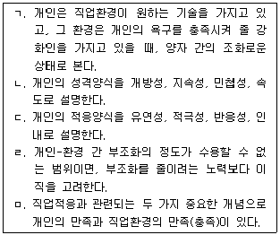
- ㄱ, ㄴ, ㄹ
- ㄱ, ㄷ, ㅁ
- ㄱ, ㄹ, ㅁ
- ㄴ, ㄷ, ㄹ
- ㄴ, ㄷ, ㅁ
(정답률: 알수없음)
3. 특성요인이론에 관한 설명으로 옳은 것은?
- 대표적인 학자로 파슨스(Parsons), 윌리엄슨(Williamson), 헐(Hull) 등이 있다.
- 정서가 불안한 사람은 직업을 선택할 수 없다고 본다.
- 개인차에 관한 연구에서 시작하였고, 심리측정을 중요하게 다루지 않는다.
- 개인의 특성은 불안정하기 때문에 표준화된 심리검사를 통해 파악해야 한다고 본다.
- 개인의 진로발달 과정을 설명하고 있다.
(정답률: 알수없음)
4. 홀랜드(Holland) 이론에 관한 설명으로 옳지 않은 것은?
- 개인의 성격을 강조하였기 때문에 개인과 환경의 상호작용이 중요하지 않다고 본다.
- 개인은 자신의 특성과 유사한 직업환경을 선호하는 경향이 있다고 본다.
- 관습형은 체계적으로 자료를 처리하는 것을 선호하고 심미적 활동을 피하는 경향이 있다.
- 탐구형은 분석적이고 호기심이 많고 조직적이며 정확한 성향을 보인다.
- 직업정체감 척도(Vocational Identity Scale)는 Holland이론에 근거하여 개발되었다.
(정답률: 알수없음)
5. 로우(Roe)의 욕구이론에서 제시한 직업군의 주요 특징으로 옳은 것은?
- 비즈니스직(business) : 대인관계가 중요하며 타인을 도와주는 행동을 취한다.
- 기술직(technology) : 사람의 욕구와 사물에 동시에 관심을 둔다.
- 옥외활동직(outdoor) : 기술 발전으로 분화된 직업들이 있다.
- 서비스직(service) : 사람의 욕구와 복지에 관련된 직업군이다.
- 단체직(organization) : 조직 내에서 인간관계의 질을 강조하는 직업군이다.
(정답률: 알수없음)
6. 사회인지진로이론에 관한 설명으로 옳은 것은?
- 반두라(Bandura)의 이론을 적용하여 진로선택에서 자기개념의 역할을 강조한다.
- 흥미모형, 배제모형, 수행모형으로 설명된다.
- 흥미는 학습경험의 영향을 받지 않는다.
- 수행모형에서는 선택영역에서의 수행 수준을 예측한다.
- 배제모형에서 진로선택은 진로에 대한 목표선택을 의미한다.
(정답률: 알수없음)
7. 내담자는 면접에서 떨어져 취업에 실패했다. 이로 인해 심한 좌절감을 느끼는 내담자의 사례를 상담자가 엘리스(Ellis)의 ABCDE모델에 근거하여 분석한 내용으로 옳지 않은 것은?
- A : 면접에서 떨어졌다.
- B : 면접에서 떨어진 것은 거절당한 것이고, 거절당하는 사람은 무능한 사람이다.
- C : 주변 친구들의 면접 결과를 확인한다.
- D : 거절당한다고 무능한 사람인가?
- E : 거절당한다는 것은 단지 그 직업을 가질 수 없다는 것이지 무능하다는 것은 아니다.
(정답률: 알수없음)
8. 청소년 진로상담에서 심리검사의 활용으로 옳은 것은?
- 학습동기를 파악하기 위해 직업선호도검사를 실시한다.
- 진로의사결정에서 부모의 영향을 확인하기 위해 구직효율성검사를 실시한다.
- 가족의 영향을 파악하기 위해 진로가계도를 사용한다.
- 직업 적성영역을 확인하기 위해 아동용 투사검사(K-CAT)를 실시한다.
- 학습방법을 확인하기 위해 다중지능검사를 실시한다.
(정답률: 알수없음)
9. 사회학습진로상담이론에 따른 상담자의 개입으로 옳은 것은?
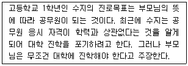
- 학력이 진로장벽이 될 수 있으므로 수지의 내적 요구를 탐색하고 진학 여부를 검토한다.
- 수지의 진로목표 설정 과정에서 나타난 환경적 조건인 부모의 영향을 탐색한다.
- 부모로부터 물려받은 유전적 재능 때문에 공무원이라는 목표를 설정했다고 가설을 세운다.
- 수지의 수행 수준과 수행 지속성을 결과기대로 설명한다.
- 수지의 진로목표 설정 과정에 대해 흥미, 능력, 가치의 순서로 탐색한다.
(정답률: 알수없음)
10. 흥미 탐색 방법으로 옳지 않은 것은?
- 홀랜드(Holland) 진로탐색검사(SDS)를 실시한다.
- 스트롱(Strong) 흥미검사를 실시한다.
- 또래 부모의 직업을 탐색한다.
- 꿈의 변천사를 통해 흥미의 변화를 탐색한다.
- 직업카드를 통해 홍미를 탐색한다.
(정답률: 알수없음)
11. 청소년 진로 집단상담을 운영할 때 고려해야 할 것을 모두 고른 것은?
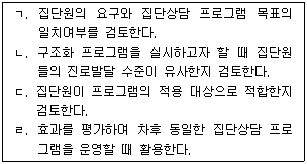
- ㄱ, ㄷ
- ㄱ, ㄹ
- ㄱ, ㄷ, ㄹ
- ㄴ, ㄷ, ㄹ
- ㄱ, ㄴ, ㄷ, ㄹ
(정답률: 알수없음)
12. 중ㆍ고등학생 진로상담의 특징으로 옳지 않은 것은?
- 학업, 진로, 심리적 어려움 등을 전반적으로 평가한다.
- 부모교육이나 부모상담의 병행여부를 검토한다.
- 내담자의 발달단계에 맞는 심리검사를 선정하여 실시한다.
- 필요에 따라 진학정보를 수집ㆍ분석한다.
- 진로전환을 탐색하고 효율적으로 조력한다.
(정답률: 알수없음)
13. 취업 준비 중인 지체 장애 학생을 상담 할 때 필요한 개입을 모두 고른 것은?
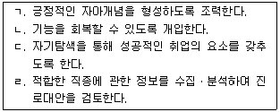
- ㄱ, ㄴ
- ㄱ, ㄷ
- ㄱ, ㄴ, ㄷ
- ㄱ, ㄴ, ㄹ
- ㄱ, ㄷ, ㄹ
(정답률: 알수없음)
14. 가이스버스(Gysbers), 헤프너(Heppner) 및 존스턴(Johnston)의 진로상담모델의 상담과정으로 옳지 않은 것은?
- 체계적 진학ㆍ직업정보 수집
- 이론적 근거에 따른 상담기술의 적용
- 상담협력관계 형성
- 내담자 정보수집 및 사례개념화
- 평가, 종결 및 추수상담
(정답률: 알수없음)
15. 진로상담이론(모델)-주요 학자-개념의 연결로 옳지 않은 것은?
- 진로선택이론 - 홀랜드(Holland) - 계측성
- 사회인지진로이론 - 크럼볼츠(Krumboltz) - 계획된 우연
- 가치중심진로모델 - 브라운(Brown) - 가치지향성
- 진로의사결정유형이론 - 하렌(Harren) - 직관적 의사결정유형
- 인지정보처리모델 - 피터슨(Peterson) 외 - 정보처리기술
(정답률: 알수없음)
16. 갓프레드슨(Gottfredson) 이론에 관한 설명으로 옳지 않은 것은?
- 진로포부발달은 성역할과 사회적 지위에 의해 영향을 받는다.
- 추상적 사고력의 발달에 따라 네 단계의 제한 과정을 거친다.
- 대부분의 사람들은 최고의 선택보다는 최선의 선택을 한다.
- 진로발달은 타협 과정에 이어 제한 과정이 순차적으로 진행된다.
- 진로 기대는 성별, 인종, 사회계층별로 차이가 난다.
(정답률: 알수없음)
17. 다문화 청소년과 진로상담을 할 때 주의해야 할 내용으로 옳지 않은 것은?
- 대안적인 사회적 지지체계를 탐색한다.
- 열심히 노력하는 사람에게는 사회적 제한이 없다고 설득한다.
- 상담자 자신이 속해 있는 문화 특성에 관한 자각능력을 키운다.
- 내담자 가족에서 주요 의사결정자가 누구인지 이해하도록 노력한다.
- 내담자가 속해 있는 문화와 주류 문화 사이에서 경험할 수 있는 정체성 혼란을 탐색하고 돕는다.
(정답률: 알수없음)
18. 진로상담이론(모델)과 관련 검사의 연결로 옳지 않은 것은?
- 진로발달이론 - 진로성숙도검사
- 인지정보처리모델 - 진로사고검사
- 직업적응이론 - 직업가치관검사
- 사회학습진로이론 - 진로신념검사
- 특성요인이론 - 진로결정검사
(정답률: 알수없음)
19. 수퍼(Super)의 진로발달이론 가정으로 옳은 것은?
- 진로성숙은 발달심리적 구성개념이다.
- 진로유형의 특성은 문화 환경에 의해 결정된다.
- 진로발달과정은 진로 자아개념의 발달과 실행과정이다.
- 전생애 발달과업에 관한 준비도는 인격을 구성하는 핵심적 요소이다.
- 진로발달성숙은 능력을 발휘하고 직업적 가치를 표현할 수 있는 환경에서 일어난다.
(정답률: 알수없음)
20. 수퍼(Super)의 진로발달이론에 관한 설명으로 옳은 것을 모두 고른 것은?
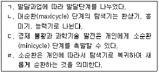
- ㄱ, ㄴ
- ㄴ, ㄷ
- ㄱ, ㄷ, ㄹ
- ㄴ, ㄷ, ㄹ
- ㄱ, ㄴ, ㄷ, ㄹ
(정답률: 알수없음)
21. 청소년 진로상담자가 갖추어야 할 역량에 관한 설명으로 옳은 것을 모두 고른 것은?
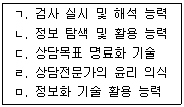
- ㄴ
- ㄱ, ㄴ
- ㄱ, ㄷ, ㅁ
- ㄴ, ㄷ, ㄹ, ㅁ
- ㄱ, ㄴ, ㄷ, ㄹ, ㅁ
(정답률: 알수없음)
22. 수퍼(Super)의 생애기간과 생애공간 이론(life-span theory, life-space theory)에 관한 설명으로 옳은 것을 모두 고른 것은?
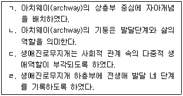
- ㄱ, ㄴ
- ㄱ, ㄹ
- ㄴ, ㄷ
- ㄱ, ㄷ, ㄹ
- ㄱ, ㄴ, ㄷ, ㄹ
(정답률: 알수없음)
23. 직업가치관에 관한 설명으로 옳지 않은 것은?
- 가치관경매 활동은 가치관 명료화에 도움이 된다.
- 직업가치관은 직업포부, 직무만족에 영향을 미친다.
- 직업가치관검사를 워크넷(http://work.go.kr)에서 할 수 있다.
- 직업가치관 검사는 진로 목표가 불분명한 내담자에게 유용하다.
- 직업가치관 검사 결과는 개인의 경험과 일치할 때 신뢰도가 높다.
(정답률: 알수없음)
24. 청소년 진로상담자의 진로정보 평가기준에 관한 설명으로 옳은 것을 모두 고른 것은?
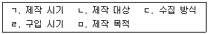
- ㄱ, ㄴ, ㄷ
- ㄱ, ㄴ, ㅁ
- ㄴ, ㄷ, ㄹ
- ㄴ, ㄹ, ㅁ
- ㄷ, ㄹ, ㅁ
(정답률: 알수없음)
25. 진로상담에서 내담자의 저항에 관한 설명으로 옳은 것은?
- 진로상담에서는 내담자의 저항이 나타나지 않는다.
- 마술처럼 해결될 것이라는 내담자의 기대는 저항으로 나타나기도 한다.
- 단기상담으로 진행되기 때문에 내담자의 저항에 관심을 갖지 않는다.
- 솔직한 대화는 간접적 이득을 주지만 저항을 일으킬 수도 있다.
- 진로문제로 상담을 시작하면 자신의 심리적 문제를 회피할 수 있어 저항이 나타나지 않는다.
(정답률: 알수없음)
26. 다음의 대화에 나타난 상담의 단계는?
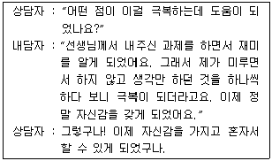
- 상담계획 구조화
- 상담목표 명료화
- 상담협력관계 형성
- 종결환경 조성
- 추수상담 일정 확정
(정답률: 알수없음)
27. 여성 진로상담에서 고려해야할 사항으로 옳지 않은 것은?
- 경력단절의 가능성을 고려하여 다목적을 지향하는 단기적인 진로설계를 계획한다.
- 학업수행에서 특정 과목을 기피하여 진로선택의 폭을 제한하는지 탐색한다.
- 성역할 고정관념 내면화 가능성을 탐색한다.
- 여성이 전형적인 남성중심의 직업에 대하여 보이는 낮은 자기효능감에 관심을 갖는다.
- 심리검사해석을 할 때 성편견 문항, 부적절한 규준집단으로 인한 오류를 고려한다.
(정답률: 알수없음)
28. 「한국직업사전」에서 정의하는 직업의 개념 요소로 옳지 않은 것은?
- 금전수입
- 생계유지
- 사회적 역할의 분담
- 개성의 발휘 및 자아의 실현
- 계속적인 활동
(정답률: 알수없음)
29. A, B, C, D, E에 들어갈 단어를 순서대로 나열한 것은?
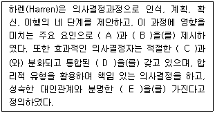
- A : 자아개념, B : 의사결정유형, C : 자아존중감, D : 자아개념, E : 목적의식
- A : 자아존중감, B : 정서적 자각, C : 진로성숙도, D : 자아의식, E : 직업관
- A : 자기조절, B : 우유부단함, C : 도덕성, D : 자아, E : 진로목표
- A : 자아효능감, B : 진로성숙도, C : 자아존중감, D : 자율성, E : 생활양식
- A : 정서조절, B : 흥미유형, C : 진로성숙도, D : 자아의식, E : 가치관
(정답률: 알수없음)
30. A 정보고등학교 2학년에 재학 중인 철호의 직업선호도검사 결과 해석으로 옳은 것은?
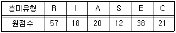
- 일관성(consistency)이 높다.
- 일치성(congruence)이 높다.
- 변별성(differentiation)이 높다.
- 직업으로 보험설계사를 추천한다.
- 교우관계가 좋을 것으로 판단된다.
(정답률: 알수없음)
2과목: 집단상담
31. 다른 집단원들도 자신과 비슷한 환경이나 문제를 가지고 있다는 것을 깨달음으로써 불필요한 방어를 줄이고 상담작업을 촉진하게 하는 치료적 요인은?
- 보편성
- 응집력
- 실존적 요인
- 희망의 주입
- 동일시
(정답률: 알수없음)
32. 수줍음이 많은 학생들에게 자기표현 증진을 목적으로 매주 1회 12주 진행되며, 매 회기마다 계획된 활동들로 프로그램이 구성된 집단상담 유형은?
- 비구조화된 동질적 구성의 자기 성장집단
- 구조화된 동질적 구성의 집중적 집단
- 구조화된 동질적 구성의 분산적 집단
- 비구조화된 이질적 구성의 분산적 집단
- 구조화된 이질적 구성의 집중적 집단
(정답률: 알수없음)
33. 2인의 공동상담자가 진행하는 집단상담에 관한 설명으로 옳지 않은 것은?
- 한 상담자가 개입활동에 주력할 때, 다른 상담자는 집단원 관찰에 주의를 기울일 수 있다.
- 공동상담자의 인간적 성향과 이론적 배경이 상반될수록 집단에 도움이 된다.
- 남성 상담자와 여성 상담자일 때 그 역할이 보완적이어서 집단에 도움이 된다.
- 정신역동적 집단에서 한 상담자의 역전이 반응을 다른 상담자가 점검할 수 있어 도움이 된다.
- 상담회기 전후에 공동상담자 간 토의하는 시간을 갖는 것이 도움이 된다.
(정답률: 알수없음)
34. 한 내담자가 개인상담과 집단상담을 동시에 참여하게 되는 상담모델에 관한 설명으로 옳은 것을 모두 고른 것은?
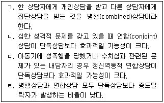
- ㄱ, ㄴ
- ㄴ, ㄷ
- ㄷ, ㄹ
- ㄱ, ㄴ, ㄷ
- ㄴ, ㄷ, ㄹ
(정답률: 알수없음)
35. 교류분석 집단상담 기법을 모두 고른 것은?
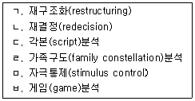
- ㄱ, ㄷ, ㄹ
- ㄴ, ㄷ, ㅂ
- ㄷ, ㄹ, ㅂ
- ㄴ, ㄷ, ㄹ, ㅂ
- ㄴ, ㄷ, ㄹ, ㅁ, ㅂ
(정답률: 알수없음)
36. 게슈탈트 집단상담의 주요개념 및 기법을 모두 고른 것은?
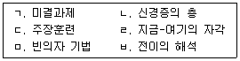
- ㄱ, ㄴ, ㄷ, ㄹ
- ㄱ, ㄴ, ㄹ, ㅁ
- ㄴ, ㄹ, ㅁ, ㅂ
- ㄷ, ㄹ, ㅁ, ㅂ
- ㄱ, ㄴ, ㄷ, ㄹ, ㅁ
(정답률: 알수없음)
37. 개인상담과 비교하였을 때 집단상담이 갖는 특징을 모두 고른 것은?
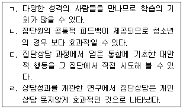
- ㄱ, ㄷ
- ㄴ, ㄷ
- ㄱ, ㄴ, ㄷ
- ㄴ, ㄷ, ㄹ
- ㄱ, ㄴ, ㄷ, ㄹ
(정답률: 알수없음)
38. 대인간 상호작용을 중시하는 집단상담에서 집단원들이 얻게 되는 통찰에 해당되는 것을 모두 고른 것은?
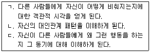
- ㄱ
- ㄴ
- ㄱ, ㄴ
- ㄴ, ㄷ
- ㄱ, ㄴ, ㄷ
(정답률: 알수없음)
39. 정신역동적 비구조화 집단상담에서 관찰되는 아래 현상은?
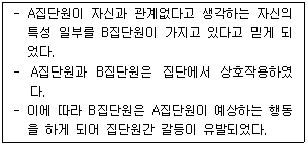
- 역전이
- 분열-우울 위상
- 투사적 동일시
- 탈자기중심화
- 역할전환
(정답률: 알수없음)
40. 상호작용 중심적 집단에서 집단원의 중도 탈락 이유로 옳은 것을 모두 고른 것은?
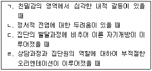
- ㄱ, ㄴ
- ㄷ, ㄹ
- ㄱ, ㄴ, ㄷ
- ㄴ, ㄷ, ㄹ
- ㄱ, ㄴ, ㄷ, ㄹ
(정답률: 알수없음)
41. 응집력이 높은 집단에서 관찰되는 집단원의 특징으로 옳지 않은 것은?
- 다른 집단원들에게 영향을 주기 위해 더 열심히 노력한다.
- 더 많은 자기 개방을 한다.
- 집단 규범을 잘 지키고, 집단 규범 일탈자에게 압력을 가한다.
- 부정적 감정은 거의 표현하지 않는다.
- 한 명의 집단원이 중도 탈락했을 때, 집단의 붕괴에 대하여 덜 민감하게 반응한다.
(정답률: 알수없음)
42. 비구조화 집단상담에서 신뢰 대 불신, 참여의 주저, 의미의 추구, 의존이 주된 관심사가 되는 발달단계는?
- 계획단계
- 초기단계
- 전환단계
- 작업단계
- 종결단계
(정답률: 알수없음)
43. 집단원이 집단상담 중 경험한 아래 현상이 의미하는 개념은?
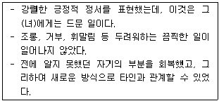
- 정화
- 치료요인으로서 실존적 요인
- 교정적 정서 체험
- 탈감각화
- 집단에서 사회적 강화
(정답률: 알수없음)
44. 성장집단에서 집단규범 형성을 위한 상담자 역할에 해당하는 것을 모두 고른 것은?
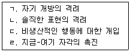
- ㄱ, ㄴ
- ㄴ, ㄷ
- ㄷ, ㄹ
- ㄱ, ㄴ, ㄹ
- ㄱ, ㄴ, ㄷ, ㄹ
(정답률: 알수없음)
45. 상담자 반응에 해당하는 것으로 보기 중 옳은 것을 모두 고른 것은?
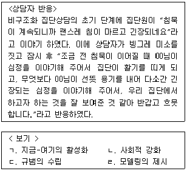
- ㄱ, ㄴ
- ㄱ, ㄹ
- ㄴ, ㄷ
- ㄴ, ㄷ, ㄹ
- ㄱ, ㄴ, ㄷ, ㄹ
(정답률: 알수없음)
46. 초보 집단상담자가 실시하기에 상대적으로 용이한 집단상담의 형태는?
- 구조적, 폐쇄적, 동질적 집단상담
- 구조적, 개방적, 이질적 집단상담
- 개방적, 분산적, 이질적 집단상담
- 비구조적, 개방적, 이질적 집단상담
- 비구조적, 폐쇄적, 분산적 집단상담
(정답률: 알수없음)
47. 집단상담 평가에 관한 설명으로 옳지 않은 것은?
- 매회기마다 실시하여야만 한다.
- 평가의 일차적인 목적은 목표 관리이다.
- 평가의 주체는 집단상담자이며 대상은 집단원이다.
- 평가 내용에는 집단의 분위기, 응집성, 의사소통 형태, 인간관계 형태 등이 포함된다.
- 평가의 주체와 대상이 다르다는 것은 상담자와 집단원이 동반체제가 되어 집단상담을 진행해야 함을 의미한다.
(정답률: 알수없음)
48. 집단상담 계획을 위한 진행과정을 순서대로 나열한 것은?
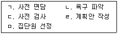
- ㄱ - ㄴ - ㄷ - ㄹ - ㅁ
- ㄱ - ㄷ - ㄴ - ㅁ - ㄹ
- ㄴ - ㄹ - ㄱ - ㅁ - ㄷ
- ㄹ - ㅁ - ㄱ - ㄴ - ㄷ
- ㄴ - ㅁ - ㄱ - ㄹ - ㄷ
(정답률: 알수없음)
49. 집단상담자의 역할에 관한 설명으로 옳은 것은?
- 비구조적 집단상담에서는 상담자에게 요구되는 역할은 없다.
- 집단원의 저항이 있을 경우 저항이 집단에 도움이 되도록 활용할 수 있다.
- 집단의 규범은 집단원에 의해서 형성하여야 하므로 상담자가 관여하지 않아야 한다.
- 공동상담자와 함께 진행할 때는 서로 합의하여 매회기 상담자를 정하여 그 역할을 수행하는 것이 좋다.
- 독점하는 집단원이 있을 경우 상호작용을 촉진시킬 수 있도록 그의 능력을 적극 장려하고 활용한다.
(정답률: 알수없음)
50. 집단상담의 윤리와 규범에 관한 설명으로 옳지 않은 것은?
- 집단상담 중에는 때로 집단원에게 익숙한 사회적 규범과 다른 행동을 요구하기도 한다.
- 규범이 명확할수록 집단상담 진행에 도움이 된다.
- 집단원의 권리보다는 집단의 권리가 존중되어야 한다.
- 집단에서 권장하는 행동 등과 같은 긍정적인 규범도 있다.
- 집단상담의 궁극적인 요구는 집단원의 변화에 초점을 두어야 한다.
(정답률: 알수없음)
51. 비자발적인 청소년의 참여 동기를 촉진시키는 방법으로 옳지 않은 것은?
- 집단원이 수용받는 경험을 하게 한다.
- 집단을 거부할 권리나 비밀유지 등을 고지한다.
- 집단에 대한 자신의 마음을 표현할 수 있는 시간을 충분히 가지게 한다.
- 상담자는 진실하게 대하고 집단원의 욕구와 특성에 맞는 흥미롭고 창의적인 활동을 계획한다.
- 명령이나 강제로 참여하게 된 집단원에게는 상담 내용과 목표에 대해 알려 주지 않는 것이 참여도를 높인다.
(정답률: 알수없음)
52. 청소년 집단상담을 계획할 때 고려해야 할 기본사항으로 옳지 않은 것을 모두 고른 것은?
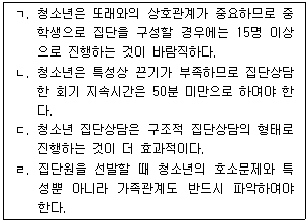
- ㄱ, ㄴ
- ㄱ, ㄴ, ㄹ
- ㄱ, ㄷ, ㄹ
- ㄴ, ㄷ, ㄹ
- ㄱ, ㄴ, ㄷ, ㄹ
(정답률: 알수없음)
53. 다음 대화에서 집단상담자가 적용한 기술은?
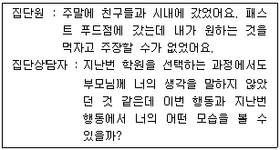
- 재진술하기
- 직면하기
- 연결짓기
- 저항의 처리
- 의존성 처리
(정답률: 알수없음)
54. 종결회기에서 심층적인 문제를 노출하는 집단원에 관한 상담자의 반응으로 옳지 않은 것은?
- 집단원이 합의하면 시간을 가지고 다룰 수 있다.
- 심층 문제를 다루지 못한 미진한 마음을 표출하게 한다.
- 개인상담으로 진행될 수 있도록 권하고 실행할 수 있는 용기를 준다.
- 다른 집단원을 설득해서라도 그 문제를 다루어야 한다.
- 종결회기여서 충분히 다룰 수 없음을 이해시키고 집단원의 행동을 제한한다.
(정답률: 알수없음)
55. 상담기술에 관한 설명으로 바르게 연결한 것은?
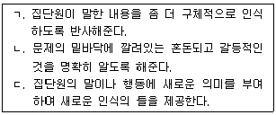
- ㄱ - 반영, ㄴ - 해석, ㄷ - 직면
- ㄱ - 반영, ㄴ - 명료화, ㄷ - 해석
- ㄱ - 구체화, ㄴ - 반영, ㄷ - 해석
- ㄱ - 반영, ㄴ - 명료화, ㄷ - 직면
- ㄱ - 구체화, ㄴ - 해석, ㄷ - 직면
(정답률: 알수없음)
56. 아동, 청소년 집단상담의 유의 사항이 아닌 것은?
- 윤리적 원칙과 법규를 고려하여야 한다.
- 종결을 사전에 고지하고 준비시켜야 한다.
- 약물남용의 경우는 비밀보장의 원칙을 철회하고 보호자에게 알려야 한다.
- 18세 이하의 경우 부모의 동의를 얻어야 한다는 것이 법적인 규제임을 명심하여야 한다.
- 집단원으로 하여금 참여 동기와 기대, 집단 규칙 등에 대해 언어로 표현하게 하는 것이 효과적이다.
(정답률: 알수없음)
57. 집단상담자의 행동으로 옳지 않은 것은?
- 상담자의 적극적인 참여는 집단원의 참여 기회를 줄이고 집단원간의 상호작용을 방해한다.
- 상담자의 자기개방은 집단원의 자기개방에 모델이 된다.
- 분명하고 명백한 기준을 제시하는 것은 집단의 진행에 도움이 된다.
- 집단원들이 건설적이고 직접적인 방식으로 상호작용하도록 조력하여야 한다.
- 상담자의 수용적인 반응은 집단원의 자기개방에 도움을 준다.
(정답률: 알수없음)
58. 의존하는 집단원에 관한 반응으로 옳은 것은?
- 상담자가 집단원의 의존행동을 조장할 수도 있으므로 상담자 자신을 탐색해 보는 작업이 필요하다.
- 의존하지 않도록 돕기 위해서 집단원의 행동을 계속 반영해 준다.
- 상담자가 도움을 주기 보다는 집단원이 도움을 줄 수 있도록 집단원을 활용한다.
- 질문을 많이 하는 형태로 의존하는 집단원에게 성실하게 대답한다.
- 스스로 해결할 수 있는 힘이 생길 때까지 의존을 허용한다.
(정답률: 알수없음)
59. 침묵하는 집단원에 관한 일반적인 대처 반응으로 옳은 것은?
- 집단의 초기에 침묵하는 집단원이 있으면 해석해 준다.
- 집단의 초기에 적극적인 참여를 요구한다.
- 내담자를 존중하며 끝까지 기다린다.
- 표정ㆍ몸짓 등 비언어적 행동에 대해 언급하며 자연스러운 참여를 유도한다.
- 집단원의 이름을 계속 부르며 관심을 적극 표명한다.
(정답률: 알수없음)
60. 집단상담자의 자질이 아닌 것은?
- 진실성과 유모어감
- 자기수용과 용기
- 개인상담과 집단상담의 경험
- 탈가치와 자기주도적 리더쉽
- 집단계획과 조직능력
(정답률: 알수없음)
3과목: 가족상담
61. 미누친(Minuchin)의 구조적 가족상담에 관한 설명으로 옳은 것은?
- 주요 개념은 가족구조와 다세대 전수과정이다.
- 인과관계의 선형성(linear causality)을 가정한다.
- 주요 기법은 합류(joining)와 실연(enactment)이다.
- 개별 가족구성원의 행동변화가 주요 상담목표이다.
- 문제나 증상에 대해 결정론적 시각을 기초로 발전하였다.
(정답률: 알수없음)
62. 수민이는 중학교 1학년이다. 어머니는 3년 전 가출하였고 그 이후 전혀 연락이 없으며, 아버지는 잦은 음주로 집안일에 전혀 신경을 쓰지 않고 있다. 수민이는 어머니 가출 이후부터 집안일뿐 아니라 세 살 아래 남동생과 아버지까지 돌보고 있다. 이 현상을 나타내는 개념은?
- 충성심(loyalty)
- 회전판(revolving slate)
- 부모화(parentification)
- 동맹(alliance)
- 가족유산(family legacy)
(정답률: 알수없음)
63. 개인상담과 체계론적 가족상담의 비교로 옳은 것을 모두 고른 것은?
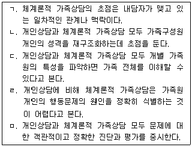
- ㄱ, ㄴ
- ㄱ, ㄹ
- ㄴ, ㄷ
- ㄱ, ㄷ, ㄹ
- ㄴ, ㄷ, ㅁ
(정답률: 알수없음)
64. 가족상담의 종결을 고려하는 지표로 옳은 것을 모두 고른 것은?
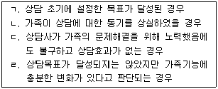
- ㄱ, ㄷ
- ㄱ, ㄴ, ㄷ
- ㄱ, ㄴ, ㄹ
- ㄴ, ㄷ, ㄹ
- ㄱ, ㄴ, ㄷ, ㄹ
(정답률: 알수없음)
65. 다음 가족상담의 개념에 관한 설명으로 옳은 것은?
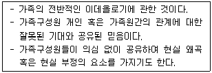
- 가족신화(family myth)
- 가족규칙(family rule)
- 가족투사과정(family projection process)
- 가족전체성(family wholeness)
- 가족응집성(family cohesion)
(정답률: 알수없음)
66. 이야기치료에 관한 설명으로 옳지 않은 것은?
- 포스트모더니즘 사조 속에서 발전하였다.
- 상담자는 탈중심적이고(decentered) 영향력있는(influential) 입장을 취한다.
- 화이트(White)와 엡스톤(Epston)에 의해 발전되었다.
- 인간의 정체성이 청소년기에 형성되면 지속된다고 본다.
- 주요 기법으로 정의예식(definitional ceremony)이 있다.
(정답률: 알수없음)
67. 가족상담 이론가와 기법의 연결로 옳지 않은 것은?
- 화이트(White) - 역설적 개입
- 미누친(Minuchin) - 추적(tracking)
- 드쉐이저(de Shazer) - 관계성질문
- 보웬(Bowen) - 과정질문
- 마다네스(Madanes) - 가장기법(pretend technique)
(정답률: 알수없음)
68. 가족체계론적 시각에 관한 설명으로 옳지 않은 것은?
- 부적(negative) 피드백은 가족체계가 안정지향적으로 작동하는 것이다.
- 가족원간의 디지털 의사소통 양식은 언어적 의사소통을 의미한다.
- 가족체계에서는 정적(positive) 피드백이 부적 피드백보다 더 바람직하다.
- 가족체계는 하위체계들로 구성되고, 사회체계는 가족의 상위체계이다.
- 가족구성원 개인의 특성보다 가족 상호작용 패턴에 초점을 둔다.
(정답률: 알수없음)
69. 사티어(Satir) 경험적 가족상담의 주요 기법을 나열한 것으로 옳은 것은?
- 가설설정, 빙산치료, 가족게임
- 순환질문, 역설적 개입, 정체성 질문
- 긴장고조기법, 투사적 동일시, 원가족도표
- 원가족 삼인군 치료, 순환질문, 사이버네틱스
- 빙산치료, 원가족 삼인군 치료, 가족조각 기법
(정답률: 알수없음)
70. 사회구성주의 시각에 관한 설명으로 옳은 것을 모두 고른 것은?
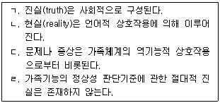
- ㄱ, ㄴ, ㄷ
- ㄱ, ㄴ, ㄹ
- ㄱ, ㄷ, ㄹ
- ㄴ, ㄷ, ㄹ
- ㄱ, ㄴ, ㄷ, ㄹ
(정답률: 알수없음)
71. 가족상담 이론 혹은 개념에 관한 설명으로 옳은 것을 모두 고른 것은?
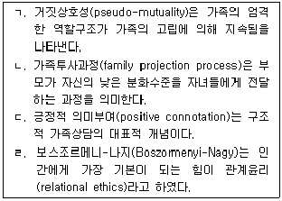
- ㄱ, ㄷ
- ㄴ, ㄹ
- ㄱ, ㄴ, ㄷ
- ㄴ, ㄷ, ㄹ
- ㄱ, ㄴ, ㄷ, ㄹ
(정답률: 알수없음)
72. 카터(Carter)와 맥골드릭(McGoldrick)이 제시한 가족체계에서의 스트레스원(stressor)에 관한 설명으로 옳지 않은 것은?
- 가풍은 수직적 스트레스원이다.
- 가족원의 만성적 질병은 수평적 스트레스원이다.
- 자녀 출산은 수평적 스트레스원이다.
- 가족원의 실직은 수직적 스트레스원이다.
- 가족유산은 수직적 스트레스원이다.
(정답률: 알수없음)
73. 영호 어머니는 중학교 1학년인 영호가 학교 가기를 싫어하고 집에서는 거의 말을 안 한다는 이유로 영호를 상담에 의뢰하였다. 상담자가 “영호야, 학교 가기가 싫고 집에서는 말하기 싫은 이 상황에 대해 이름이나 제목을 붙인다면 뭐라고 할 수 있을까?”라고 질문하는 상담 모델의 특징으로 옳은 것은?
- 문제는 사람의 특성 때문에 생긴다고 본다.
- 인간의 경험은 사회문화적 산물이라고 본다.
- 부모자녀 하위체계의 기능회복에 초점을 둔다.
- 인간은 수동적이고 반응적인 존재라고 본다.
- 가족의 잘못된 경계선 때문에 증상이 발생한다고 본다.
(정답률: 알수없음)
74. 가족상담 모델 혹은 이론가와 주요 상담목표의 연결로 옳지 않은 것은?
- MRI 모델 - 가족내 지속되는 악순환적 피드백 고리의 개선을 통한 증상제거 및 행동변화
- 보스조르메니-나지(Boszormenyi-Nagy) - 가족원들의 재접속(rejunction)을 통한 관계개선
- 헤일리(Haley) - 가족의 잘못된 위계질서의 수정
- 해결중심 모델 - 가족의 역기능적 상호작용의 개선
- 보웬(Bowen) - 가족구성원의 분화수준 향상
(정답률: 알수없음)
75. 다음의 상황에서 활용할 수 있는 가족상담 사정도구로 옳은 것은?
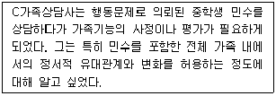
- MBTI
- 생태도
- 가계도
- FACES
- ENRICH
(정답률: 알수없음)
76. 가족상담 발달 초기에 정신분열증(조현병) 환자 가족의 역기능을 설명하기 위해 제시된 개념으로 옳지 않은 것은?
- 이중구속(double bind)
- 부부균열(marital schism)
- 고무울타리(rubber fence)
- 거짓적대성(pseudo-hostility)
- 문제로 가득 찬 이야기(problem-saturated story)
(정답률: 알수없음)
77. 보웬(Bowen) 가족상담의 상담자 역할에 관한 설명으로 옳은 것을 모두 고른 것은?
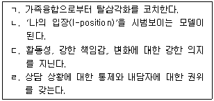
- ㄱ, ㄴ
- ㄴ, ㄷ
- ㄷ, ㄹ
- ㄱ, ㄴ, ㄹ
- ㄴ, ㄷ, ㄹ
(정답률: 알수없음)
78. 다음의 현상을 설명하는 체계론적 개념으로 옳은 것은?
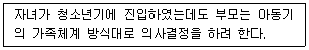
- 경계선
- 개방체계
- 가족항상성
- 가족규칙
- 정적 피드백
(정답률: 알수없음)
79. 다음의 상황과 관련되는 가족상담자의 윤리는?
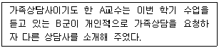
- 비밀보장
- 다양성 존중
- 고지된 동의
- 이중관계 금지
- 자기결정권 존중
(정답률: 알수없음)
80. 다음의 상담 개입을 설명하는 개념으로 옳은 것은?
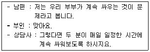
- 시련처방(ordeal technique)
- 가장기법(pretend technique)
- 의식처방(ritual prescription)
- 억제기법(restraining technique)
- 증상처방(symptom prescription)
(정답률: 알수없음)
81. 각 가족상담 모델에서 제시하는 상담자의 역할로 옳지 않은 것은?
- 인지행동 모델 : 부부나 부모를 대상으로 교육하고 훈련시킨다.
- 맥락적 모델 : 가족구조를 나타내는 가족의 상호교류와 그 패턴에 개입한다.
- 경험적 모델 : 자신을 개방적이고 솔직하며 자발적인 정서표현의 모델로 활용한다.
- 사회구성주의 모델 : 내담자의 견해를 존중하고 '알지 못한다는 자세'로 호기심을 갖고 접근한다.
- 정신역동 모델 : 개인이나 가족원 간, 가족과 상담자 간에 심리 내적 역동이나 투사적 동일시를 중시한다.
(정답률: 알수없음)
82. 다음의 상담 장면에서 상담자가 시도하고 있는 개입 기법은?
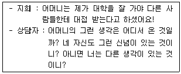
- 모방(mimesis)
- 예외질문(exception-finding question)
- 재정의(reframing)
- 행동형성(behavior shaping)
- 지배담론의 해체(deconstruction of dominant discourse)
(정답률: 알수없음)
83. 청소년 자녀가 있는 가족에 대한 개입전략으로 옳지 않은 것은?
- 가족 경계의 융통성을 증가시킨다.
- 노부모 세대를 돌보는 변화가 시작됨을 고려한다.
- 중년부부의 결혼생활과 직업 문제에 재초점을 두게 한다.
- 확대가족이나 친구가 배우자를 수용하도록 관계를 재편성하게 한다.
- 청소년이 가족체계 안과 밖에서 생활하는 것을 허용하는 부모-자녀관계로 변화시킨다.
(정답률: 알수없음)
84. 해결중심상담에서 제시하는 다음의 <상담자-내담자 관계유형>에 부여하는 <과제>로 옳은 것을 모두 고른 것은?
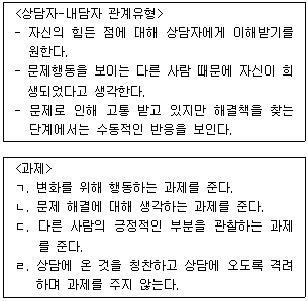
- ㄹ
- ㄱ, ㄴ
- ㄱ, ㄷ
- ㄴ, ㄷ
- ㄱ, ㄴ, ㄷ
(정답률: 알수없음)
85. 가족상담이론 혹은 개념에 관한 설명으로 옳지 않은 것은?
- 초이성형(super-reasonable)의 의사소통 유형에서 무시된 요소는 상황이다.
- 이야기치료는 새로운 대안적 이야기(alternative story)를 재구성하도록 돕는다.
- 연합(coalition)은 특정 가족원이 제3의 구성원에 대항하기 위해 맺는 동맹이다.
- 행동주의 가족상담자들은 행동 변화가 부적 행동의 감소보다는 정적 행동의 증가에 의해 더 잘 성취된다고 본다.
- 순환질문(circular questioning)은 내담자가 자신을 다른 가족원들의 관점에서 보게 함으로써 자기중심에서 벗어나게 한다.
(정답률: 알수없음)
86. 반영팀(reflecting team) 접근에 관한 설명으로 옳지 않은 것은?
- 협력적 모델(collaborative model)과 관련이 깊다.
- 노르웨이의 정신과 의사인 안데르센(Andersen)이 발전시킨 것이다.
- 1차 사이버네틱스(simple cybernetics)를 토대로 하여 발전되었다.
- 상담자는 관찰자이며 내담자는 관찰대상이라는 고정된 관계를 변화시켰다.
- 상담팀(관찰자)이 상담실에서 상담을 받던 내담자 가족(참여자)에게 그들의 생각과 느낌을 전달하고, 또 이에 대한 참여자의 생각과 느낌을 관찰자에게 전달한다.
(정답률: 알수없음)
87. 다음의 상황을 설명하는 개념으로 옳은 것은?
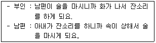
- 더러운 게임(dirty game)
- 마침표 찍기(punctuation)
- 만성불안(chronic anxiety)
- 풍부한 설명(thick description)
- 보완적 관계(complementary relationship)
(정답률: 알수없음)
88. 각 가족상담모델에서 제시하는 상담목표로 옳은 것은?
- 다세대 모델 : 제시된 현재 증상을 제거하고 행동을 변화시킨다.
- 밀란 모델 : 성장을 추구하며 일치에 의한 개인의 통합력을 증진시킨다.
- 전략적 모델 : 현재 문제를 해결하는 방법을 가족과 함께 구축하고 실천한다.
- 해결중심 모델 : 잘못 학습된 행동을 제거하고 보다 효과적이고 바람직한 행동을 새롭게 학습한다.
- 정신역동 모델 : 과거의 무의식적 이미지에 대한 통찰을 통한 인성 변화와 가족원의 무의식적 구속으로부터의 자유를 추구한다.
(정답률: 알수없음)
89. 가족상담의 실제와 관련된 사항으로 옳지 않은 것은?
- 가족상담 첫 회기에는 전체 가족원이 참여해야 한다.
- 상담자는 적절한 시점에서 잡담의 종료를 알리며 면담을 진행하는 것이 바람직하다.
- 다른 가족원을 대신해서 이야기해서는 안 된다는 규칙을 만들어 놓는 것이 효과적이다.
- 모든 가족원이 동시에 말하는 경우 상담자가 특정 가족원을 지정해서 질문할 수 있다.
- 상담실에서 싸움이 발생할 가능성이 높은 경우나 가족원이 따로 상담을 받기 원하는 경우 등에는 가족원을 따로 만나는 것이 좋다.
(정답률: 알수없음)
90. 가족상담 이론가와 주요 개념 혹은 기법의 연결로 옳은 것은?
- 사티어(Satir) - 증상처방, 자아존중감
- 보웬(Bowen) - 핵가족 정서체계, 사회적 정서과정
- 미누친(Minuchin) - 경계선, 정서적 단절
- 베이트슨(Bateson) - 독특한 결과, 대처질문
- 헤일리(Haley) - 체계적 둔감화, 역설적 지시
(정답률: 알수없음)
4과목: 학업상담
91. 철수가 보이는 시험불안에 관한 설명으로 옳은 것은?
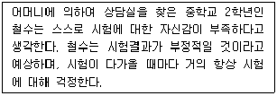
- 시험불안의 정서적 측면에 대한 설명이다.
- 시험에 대한 느낌 혹은 신체적 증상에 대한 설명이다.
- 특성불안에 해당하는 시험불안을 경험하고 있다.
- 시험불안의 인지적 측면에 관한 설명이다.
- 기질적이고 성격적인 특성을 반영하는 설명이다.
(정답률: 알수없음)
92. 학습동기의 원인을 설명하기 위한 다양한 접근 중에서 개인지향적 원인과 관련 없는 것은?
- 귀인이론
- 자기결정성
- 학습효능감
- 정적강화
- 인지적평형화 경향
(정답률: 알수없음)
93. 주의집중 능력은 크게 주의력과 집중력으로 세분화하는데, 주의력에 관한 설명으로 옳지 않은 것은?
- 인간이 감각기관을 통하여 받아들이는 수많은 정보 중에서 특정정보만을 선택하여 초점을 맞추는 능력이다.
- 정보처리의 관점에서 주의력은 작업기억과 장기기억 사이에서 가장 크게 요구된다.
- 주의력은 생물학적 반응 경향성으로 인해 정보가 강하거나 새로운 경우 쉽게 발휘된다.
- 주의력은 환경과의 상호작용을 통해 학습되는 특성이 있다.
- 연령과 상관없이 노출된 환경이 지나치게 비구조화되어 있어 주의력 문제를 나타내는 경우도 많다.
(정답률: 알수없음)
94. 두뇌발달과 학업능력 증진에 좋은 음식과 그 이유에 관한 설명으로 옳은 것은?
- 달걀노른자에 함유된 레시틴(lecithin)은 기억력 증진에 좋다.
- 검은 콩은 다량의 비타민 C를 함유하고 있어 피로회복과 해독작용을 한다.
- 김치는 불포화지방산인 리놀렌산(linolenic acid)이 풍부해 뇌의 기억력 및 학습능력을 높여준다.
- 견과류와 씨앗류는 면역 글로불린(immunoglobulin), 라이소자임(lysozyme), 락토페린(lactoferrin) 등의 성분을 함유하여 면역력을 강화해 준다.
- 들깨가루는 요오드(iodine)와 칼륨(kalium)이 다량 포함되어 두뇌발달에 좋다.
(정답률: 알수없음)
95. 시험 준비행동에 관한 설명이다. 이와같은 특성을 지닌 내담자가 사용하는 학습전략으로 옳은 것은?
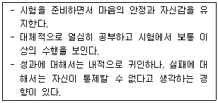
- 방어적 비관주의 전략
- 자기손상 전략
- 낙관주의 전략
- 방관적 전략
- 자기조절 전략
(정답률: 알수없음)
96. 학습장애에 관한 설명으로 옳은 것을 모두 고른 것은?
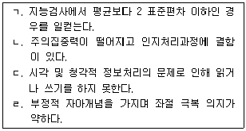
- ㄱ, ㄴ
- ㄷ, ㄹ
- ㄱ, ㄷ, ㄹ
- ㄴ, ㄷ, ㄹ
- ㄱ, ㄴ, ㄷ, ㄹ
(정답률: 알수없음)
97. 정신지체에 관한 설명으로 옳은 것을 모두 고른 것은?
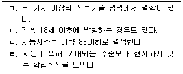
- ㄱ
- ㄱ, ㄴ
- ㄴ, ㄷ
- ㄷ, ㄹ
- ㄱ, ㄷ, ㄹ
(정답률: 알수없음)
98. 마이켄바움(Meichenbaum)과 굿맨(Goodman)의 자기통제력 향상을 위한 내재적 언어학습의 단계에 관한 설명으로 옳은 것은?
- 사회적 맥락에서의 문제해결전략과 자기교시훈련을 정교화하여 언어적 자기교시를 통한 문제해결전략을 제시한다.
- 자기교시훈련과 사회적 문제 상황에서 계획세우기, 해결책 탐색, 결과 산출과정을 언어화하는 문제해결훈련을 적절히 병행한 접근법이다.
- 외현적 시연은 성인 교수자의 시연과 지도하에 아동이 자기통제언어를 소리내어 말하도록 독려한다.
- 외현적 모델링, 외현적 시연, 안내를 통한 외현적 모델링, 속삭임을 통한 시연, 내재적 시연의 순서로 진행된다.
- 문제정의, 집중유도, 자기평가, 자기강화 등의 각 단계마다 외현적 모델링에서 시작해서 내재적 시연으로 끝나는 언어의 내재화 과정을 학습한다.
(정답률: 알수없음)
99. 학습부진 영재아에 관한 설명으로 옳지 않은 것은?
- 학습장면에서 전통적인 방식이 아닌 다른 방식으로 지식을 배우고 축적한다.
- 경우에 따라 회복되기 어려운 문제에 기인한다.
- 특정 원인에 의해서 기인하기에 원인을 찾는 것이 중요하다.
- 학습에서의 실패 경험으로 파괴적 행동, 낮은 자기 효능감, 주의력 결핍 및 과잉행동 등의 문제로 나타나기도 한다.
- 경우에 따라 근본적인 원인치료 보다 교육 및 상담을 통한 보완적인 기법의 적용이 우선되어야 할 수 있다.
(정답률: 알수없음)
100. 학습장애를 발달적 학습장애와 학업상 학습장애로 구분하여 설명할 때 옳지 않은 것은?
- 학업상 학습장애는 언어장애, 읽기장애 등이 포함된다.
- 발달적 학습장애에는 지각장애, 주의집중 장애, 기억장애, 사고장애 등이 포함된다.
- 발달적 학습장애는 출생부터 취학 전까지의 발달기를 중심으로 일어나는 문제이다.
- 학업상 학습장애는 주로 취학기의 아동들이 겪는 문제이다.
- 읽기장애는 학업상 학습장애의 대표적인 장애유형이다.
(정답률: 알수없음)
101. 학교공포증에 관한 설명으로 옳지 않은 것은?
- 신체적 증상은 주로 아침에 일어날 때 나타나는데, 학교에 가지 않아도 된다면 이내 사라진다.
- 학교공포증 아동들의 성적은 대체로 하위권이고, 지능에서는 다른 학생과 차이가 없다.
- 학교에 가고 싶지 않은 이유로서 학교 상황에 대해 갖가지 비판을 하는 경향이 있다.
- 지속적으로 결석을 하면서도 집 근처를 떠나지 않는다.
- 아동의 심리사회적 발달과정에서 학교공포증을 유발하는 가장 중요한 요인은 지나친 의존심을 낳게 하는 가족상호작용의 형태이다.
(정답률: 알수없음)
102. 프라이스(Price)가 제안한 효과적인 학습장애 아동상담으로 옳지 않은 것은?
- 일주일에 한번 정도의 규칙적인 상담스케줄을 유지하지만, 문제가 심각해지면 자주 만날 수도 있다.
- 하나의 목표에 초점을 두어 상담을 진행한다.
- 각 상담회기가 끝날 때마다 요약과 명료화를 하도록 한다.
- 최대한 유연성을 발휘하여 절충적인 입장에서 가능한 여러 가지 기법을 사용한다.
- 다른 전문가의 개입은 상담목표에 혼선을 줄 수 있기 때문에 외부 전문가와의 연계는 배제한다.
(정답률: 알수없음)
103. PQ4R의 단계에서 읽기에 해당하는 것을 모두 고른 것은?
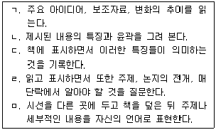
- ㄱ, ㄴ, ㅁ
- ㄷ, ㄹ, ㅁ
- ㄱ, ㄴ, ㄷ, ㄹ
- ㄴ, ㄷ, ㄹ, ㅁ
- ㄱ, ㄴ, ㄷ, ㄹ, ㅁ
(정답률: 알수없음)
104. 청소년기 학업장면에서 시험불안과 함께 가장 빈번하게 나타나는 발표불안(speech anxiety)에 관한 설명으로 옳지 않은 것은?
- 수줍음이 많고 내성적인 성향은 유전적인 요인과 관련이 있는 만큼 발표불안에 있어 유전의 영향을 배제하기 어렵다.
- 청소년기 자아정체감 형성과정에서 부모와의 잦은 갈등은 인간관계 능력의 발달지연 및 발표불안으로 나타난다.
- 부모가 비일관적이거나 무관심할 경우 또는 엄격한 태도를 취할 경우 자녀의 발표불안으로 이어질 수 있다.
- 과거에 발표를 했을 때 교사의 핀잔 또는 친구들의 부정적인 피드백으로 인하여 발표하는 상황에 불안을 느낄 수 있다.
- 발표할 기회를 충분히 갖지 못하고 발표행동을 할 연습의 기회가 적어서 불안이 생성된다.
(정답률: 알수없음)
1⑤. 학습 무동기 내담자와의 상담관계에서 상담목표설정에 관한 옳은 것을 모두 고른 것은?
- ㄱ, ㄴ
- ㄷ, ㄹ
- ㄱ, ㄴ, ㄷ
- ㄴ, ㄷ, ㄹ
- ㄱ, ㄴ, ㄷ, ㄹ
(정답률: 알수없음)
106. 주의력 결핍-과잉행동장애(ADHD) 학생이 많이 드러내는 문제 가운데 하나가 만성적 학습부진이다. ADHD와 학습부진의 관계에 관한 설명으로 옳지 않은 것은?
- 대다수의 ADHD 학생은 하나 이상의 과목에서 낙제 점수를 받는 편이다.
- ADHD 학생은 표준화된 성취도검사에서 또래보다 심각하게 낮은 점수를 받는 편이다.
- ADHD 학생의 고등학교 중퇴율은 일반 모집단에 비해 높은 편이다.
- 비언어적 학습 결손을 갖는 학생은 ADHD의 위험이 높지 않다.
- ADHD 학생의 학습부진은 교실 환경에서 나타나는 부주의, 충동성, 산만함과 같은 핵심적 증상 때문인 것으로 가정될 수 있다.
(정답률: 알수없음)
107. 학습부진의 정의에 관한 설명으로 옳은 것을 모두 고른 것은?
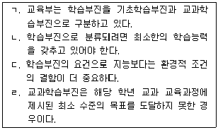
- ㄱ, ㄴ, ㄷ
- ㄱ, ㄴ, ㄹ
- ㄱ, ㄷ, ㄹ
- ㄴ, ㄷ, ㄹ
- ㄱ, ㄴ, ㄷ, ㄹ
(정답률: 알수없음)
108. 학업문제의 분류 중 정의적 문제에 관한 것을 모두 고른 것은?
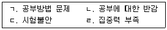
- ㄱ
- ㄱ, ㄴ
- ㄴ, ㄷ
- ㄴ, ㄷ, ㄹ
- ㄱ, ㄴ, ㄷ, ㄹ
(정답률: 알수없음)
109. 덕스(Dirks)는 25년 동안 심리적 도움이 필요한 영재아의 부모상담을 통해 상담내용을 정리하였다. 양육에 어려움을 겪고 있는 영재아 부모의 관심에 해당하는 것을 모두 고른 것은?
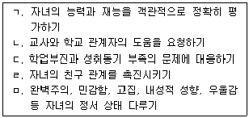
- ㄱ, ㄴ, ㄷ
- ㄱ, ㄷ, ㅁ
- ㄴ, ㄷ, ㅁ
- ㄱ, ㄷ, ㄹ, ㅁ
- ㄱ, ㄴ, ㄷ, ㄹ, ㅁ
(정답률: 알수없음)
110. 학습부진아의 인지적 특성에 관한 설명으로 옳지 않은 것은?
- 어휘력이 전반적으로 낮다.
- 정상아보다 장기기억력이 낮은 경향을 지닌다.
- 상상을 전달하는 능력이 부족하다.
- 주의력이 부족하며 흥미의 범위가 좁다.
- 중요하지 않은 정보를 회상하는 데는 별다른 차이를 보이지 않는다.
(정답률: 알수없음)
111. 학습부진아의 환경적 특징에 관한 설명 중 옳은 것은?
- 학습결과에 대한 피드백(feedback)이 부족하거나 과잉학습을 요구받는다.
- 가족 간에 정서적 공감대 형성이 충분하다.
- 가정 내의 추상적인 언어 사용이 일반적이다.
- 자기 판단력이 결여되어 새로운 상황이나 인물에 대한 적응력이 부족하다.
- 학교의 시설은 학습부진과 관련이 없다.
(정답률: 알수없음)
112. 머서(Mercer), 머서(Mercer) 및 풀렌(Pullen)의 학습부진 평가 유형 중 선별에 관한 설명으로 옳지 않은 것은?
- 모든 학생들을 대상으로 평가 실시
- 특정 교과 영역에서 학습에 어려움을 겪을 가능성이 있는 학생을 가려내기 위해 사용
- 학생의 개별화 교육 프로그램의 효과를 평가하는데 일차적인 목적을 두고 실시
- 단 시간 안에 여러 명의 학생들을 대상으로 실시
- 해당 학년 동안 여러 번 실시하거나 새로운 학생이 전학해올 때 실시
(정답률: 알수없음)
113. 학습장애 진단에 사용하는 검사를 모두 고른 것은?
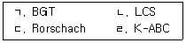
- ㄱ, ㄴ
- ㄷ, ㄹ
- ㄱ, ㄴ, ㄹ
- ㄱ, ㄷ, ㄹ
- ㄱ, ㄴ, ㄷ, ㄹ
(정답률: 알수없음)
114. 산술장애가 있는 아동 및 청소년들이 경험하는 어려움으로 옳지 않은 것은?
- 개념을 이해하고 명명하기
- 적절한 운동 협응 하기
- 산술부호를 인식하거나 읽기
- 공식기호를 인식하기
- 구구단 외우기
(정답률: 알수없음)
115. 성취동기에 대한 설명 중 옳은 것은?
- 맥클랜드(McClelland)와 앳킨슨(Atkinson)은 주제통각검사(TAT)와 같은 투사적 성격검사를 통해 개인의 성취동기수준을 측정하였다.
- 머레이(Murray)는 인간의 다섯 가지 심리발생적 욕구 중의 하나로 성취동기를 제안하였다.
- 맥클랜드(McClelland)는 대학생의 성취동기와 학업성취 사이에는 부적 상관이 있음을 보고했다.
- 콜(Kolb)은 성취수준이 낮은 대학생들을 대상으로 성취동기훈련을 실시하였는데, 실험집단이 통제집단에 비해 학기말 성적이 높게 나타났다.
- 성취동기가 높은 청소년의 경우, IQ 수준이 높고 학업성취도도 높았다.
(정답률: 알수없음)
116. 학습전략 중 시연전략으로 옳지 않은 것은?
- 자료를 소리 내어 반복하기
- 자료 베끼기
- 선택적으로 노트정리하기
- 새로운 정보를 첨가하기
- 중요한 부분에 밑줄 긋기
(정답률: 알수없음)
117. 자원관리 전략에 해당하는 것을 모두 고른 것은?
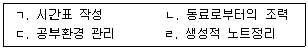
- ㄱ, ㄴ
- ㄴ, ㄹ
- ㄱ, ㄴ, ㄷ
- ㄱ, ㄷ, ㄹ
- ㄱ, ㄴ, ㄷ, ㄹ
(정답률: 알수없음)
118. 모간(Morgan)은 학습자 스스로가 중간목표를 세워서 학습하는 것이 목표 없이 학습하는 것보다 좋은 결과를 나타낸다고 주장하였다. 모간(Morgan)이 학습에 응용한 방법은?
- 쌍연합학습
- 계열목록학습
- 자유회상목록법
- 네트워킹(networking) 기법
- 자기점검법
(정답률: 알수없음)
119. 주어진 정보를 잘 부호화해서 저장하고 필요한 경우에 인출하는 인지전략을 정보처리 과정이라 한다. 댄서로우(Dansereau)의 정보처리 과정 구분에 해당하지 않는 것은?
- 조절전략
- 이해전략
- 사용전략
- 파지전략
- 회상전략
(정답률: 알수없음)
120. 뇌의 기능분화 이론에 근거하면, 우뇌의 기능으로 적합한 것은?
- 언어를 구조화 하기
- 점 위치 찾기
- 계산하기
- 낱말을 차례대로 외우기
- 낱말의 의미 파악하기
(정답률: 알수없음)